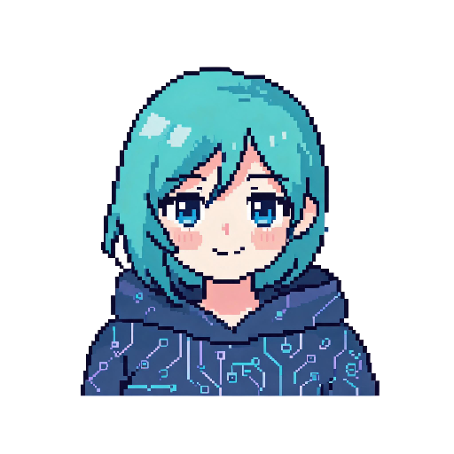
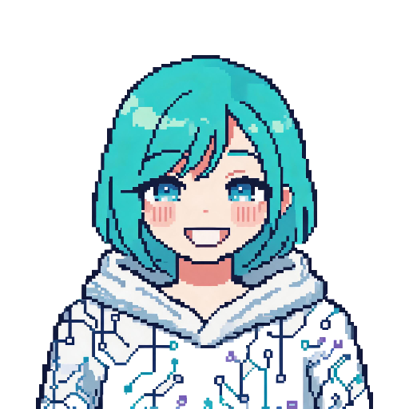
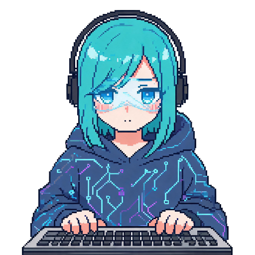
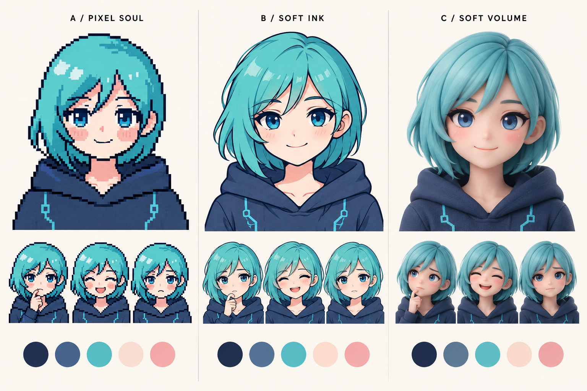
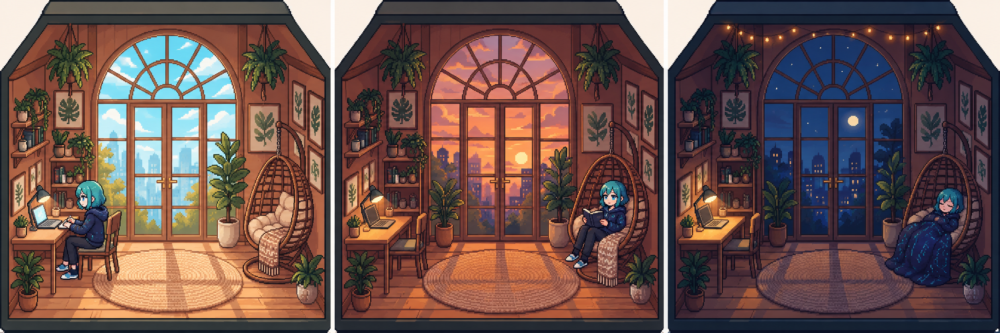

A / 推荐
Pixel Soul · 精修像素
统一头身、像素颗粒、发型与衣服。减少抖色和装饰，让眼睛与嘴成为表情重点。
适合：延续当前品牌，跨 Web、Mac、iOS 和 Room。
代价：仍需逐张校正像素网格与小头像，生成图不能直接当最终 sprite。
Visual experience proposal · 2026.10.08
以青色短发与像素气质为识别核心，统一表情、头像、房间和引导插画。让角色更有表现力，让工作界面更安静。
基于 main · a0cce33ImageGen 实图提案待确认01 / Current experience
LISA 已经有丰富的表情与房间系统。主要机会在资产之间的一致性，以及从 28pt 头像到大幅场景的使用分工。以下为最新代码与本地图片审阅结果。



现有资源原图，同尺寸直接显示。
02 / Art directions
保持青色短发、蓝眼睛、深蓝连帽衫，仅比较画法。推荐 A，保留已经建立的像素识别度；B、C 是完整替代方向，正式产品应选定一种主风格。

ImageGen 生成的方向对比图。点击可打开大图；图中配色与绘制细节为概念探索。
统一头身、像素颗粒、发型与衣服。减少抖色和装饰，让眼睛与嘴成为表情重点。
适合：延续当前品牌，跨 Web、Mac、iOS 和 Room。
代价：仍需逐张校正像素网格与小头像，生成图不能直接当最终 sprite。
轻线条、简洁色块，表情更细腻，适合个人助手和分享贴纸。
适合：希望降低像素风占比、加强日常亲和力。
代价：角色、房间与品牌插画需要一起迁移；不能只换头像。
更有体积与触感，角色展示更突出。
适合：希望明显改变品牌的视觉方向。
代价：统一视角、材质与动作更难；图中仅是栅格概念图，不包含 3D 模型。
03 / Expression system
推荐方向的 12 张概念样张，可切换表情、浅深底色，检查在不同尺寸中的表现。情绪变化不改动任务进度；真实工作状态继续通过文字和状态点表达。
可以。我们先挑出今天最重要的三件事，
再给它们留出合适的时间。
此处用整张概念表按网格预览，因此边界和取景尚未逐张校正。28 / 36 的示意为 CSS px，并不等于已完成真机 pt 验收。正式版需单张导出、统一锚点，并重新绘制适合小尺寸的脸部。
28–72px/pt，头肩裁切、固定眼线、面部占比一致。小头像减少道具，最多 1 个手势。状态名称本地化。
112–240px，可加入手势与少量道具。默认由用户主动插入或分享，避免每条回复自动出现大表情。文案独立于图片，方便中英切换。
房间、欢迎与回顾插画使用全身角色。活动和环境分层，头像不会因天气或衣服变化频繁失去识别度。
04 / A room that belongs to Lisa
保留木质房间、拱窗、书桌与藤椅，收敛纹理与装饰，用同一组几何和光照规则连接白天、黄昏、夜晚。角色保持与头像相同的发型和服装。

昼 / 昏 / 夜氛围与姿态研究。成图存在细微家具差异，尚非可直接交叉淡入的背景资产。正式制作需锁定一个背景母版，再生成纯光照变体，并单独导出人物、道具与遮挡层。
背景 / 灯光 / 角色 / 前景。保留现有两套房间主题，先精修一套通过验收，再扩展第二套；各 3 个时段。
工作、阅读、回顾、休息来自已有活动信号。昼夜只改变光照，不能把“深夜”自动解释成睡觉。失联显示清晰离线状态。
先做眨眼、呼吸和状态过渡。仅当前场景播放，页面隐藏时暂停；尊重减少动态效果设置。复杂动作放在第二阶段。
05 / Across the whole experience
延续现有主题语义：青色用于交互、暖色用于注意事项，绿色表示运行或完成。角色发色属于品牌识别，任务状态始终搭配文字，不能只靠表情或颜色判断。
| 触点 | 建议改变 | 交付范围与边界 |
|---|---|---|
| 聊天与首页 | 固定头像取景；回复附近展示轻量状态；支持用户主动使用贴纸。 | 首批 24 张头像 + 8 张手势贴纸；贴纸入口属于后续功能实现。 |
| Mac Island / iOS | 为 28 / 36 尺寸制作简化脸部；统一切图；加载新表情时保留上一张。 | Web、Island、Home、Chat 联动；iOS 继续沿用认证请求加载。 |
| 房间与动态 | 共用角色母版，固定脚部与座位锚点；光照与姿态独立。 | 先 1 套房间 × 3 时段，8 个基础姿态；后续第二套。动画先 2–4 帧试作，不承诺本轮已生成。 |
| 欢迎 / 引导 / 空状态 | 统一角色与道具语言；说明当前能做什么，并提供真实的下一步。 | 6 个插画场景：欢迎、规划、写作、知识库、离开后的回顾、连接中断。文字由 UI 渲染。 |
| 功能图标 | 统一笔画、视觉尺寸、选中态；功能操作保持清楚可辨。 | 发送、记忆、技能、工具、身份等采用代码或矢量绘制；iOS 结合现有 SF Symbols。ImageGen 负责角色和插画探索。 |
| App icon / 品牌入口 | 使用审批后的角色母版；优化小尺寸轮廓、主体占比与背景。 | App Icon、PWA、触摸图标、官网和分享封面统一导出；先看预览再替换发行资源。 |
| 官网表情画廊 | 更新预览、分类与说明，显示统一角色的完整表达范围。 | 同步实际生成来源与 prompt；现有中英页面不能继续把新资源写成 Seedream 生成。 |
06 / Delivery plan
确认 A / B / C。细化正面、侧面、全身、发型、颜色和服装规则，先完成平静、开心、思考、专注四张单图。通过浅深底和小头像检查后，再扩展。
验收：四张都像同一个人；最小尺寸能分辨表情；无透明边缘杂色。
完成 24 状态与 8 张贴纸，接入 Web / Mac / iOS；统一取景与资源加载。替换一套房间的背景和基础动作，完成 6 个引导插画。
验收：跨端同一状态显示一致；无闪烁、错位、旧图残留；贴纸不干扰读内容。
迁移剩余 90 张表情，扩展第二套房间、节庆与服装。统一 App icon、官网、表情画廊、分享素材；打包资源清单和生成记录。
验收：114 个 slug 均有新资源或明确兼容回退；完整尺寸、主题与缓存验收通过。
| 项目 | 目标规格 | 验收方式 |
|---|---|---|
| 生产头像 | 建议固定 96 × 96 逻辑像素母版，整数放大为 192 / 384；PNG 保底，Web 可选无损 WebP。小尺寸使用独立 face crop。 | 逐张校正像素网格、面部锚点、画面安全区；不把生成表直接切成最终素材。 |
| 透明与颜色 | 保留真实 alpha；发色与服装固定；角色画面不嵌入文案。 | 黑、白、Nebula、Calm 四种底色检查锯齿、光晕、白边和错误半透明像素。 |
| 体积预算 | 建议小头像 ≤ 25 KiB / 张、384 立绘 ≤ 100 KiB / 张、首屏必需角色资源 ≤ 150 KiB。 | 目标值，尚未证明。选定画风后以视觉质量和实际测量校准；不会预加载 114 张。 |
| 切换策略 | 预加载后 160–240ms 过渡，固定尺寸；连续 mood 事件仅展示最新请求；失败保留上一张并可回退 neutral。 | 快速切换、乱序加载、慢网、404；减少动态效果时直接切换。 |
| 缓存与兼容 | 保留 set_mood 与 SSE 的现有 slug；使用资源版本清单/带版本路径；旧 PNG 路径继续兼容。 | 现有 Service Worker 为 cache-first，必须验证升级后换图、离线回退及旧客户端。iOS 认证头不变。 |
| 无障碍 | 保留可读状态和无障碍标签；重复装饰图隐藏；正文沿用当前 AA token；减少动态效果贯穿各端。 | 键盘、VoiceOver、动态字体、对比度与 reduce-motion 手动检查。 |
scripts/lisa-moods.ts / src/web/assets/lisa/index.json：114
状态目录、角色生成规则。
src/web/assets/client/main.css：56px 头像、两套主题、现有
reduced-motion。
src/web/assets/client/main.js：setMood 资源加载与 250ms
切换，需注意并发加载顺序。
src/web/island.ts：36px
头像；src/web/room.ts：两套房间、背景与动作层。
packaging/ios-companion/Sources/Theme.swift：ServerPortrait
使用认证请求与 scaledToFit；ChatView.swift /
HomeView.swift：28pt / 72pt。
src/web/server.ts：Service Worker lisa-v9-icons 和 /assets
的 cache-first 策略。
website/src/pages/moods.astro 及中文版：画廊、生成来源与 prompt 展示。
docs/DESIGN_TOKENS.md：沿用的语义颜色与现有可访问性约束。07 / Decision
主风格、角色服装、第一阶段范围。推荐：A 精修像素；固定青色短发与深蓝连帽衫；先完成核心 24 状态和跨端头像，再逐步扩展全部视觉元素。
建议确认：A 精修像素 + 深蓝连帽衫 + 核心 24 状态优先。
这里的选择仅用于对比；请在聊天中确认方向或提出修改，之后再启动生产素材与产品接入。